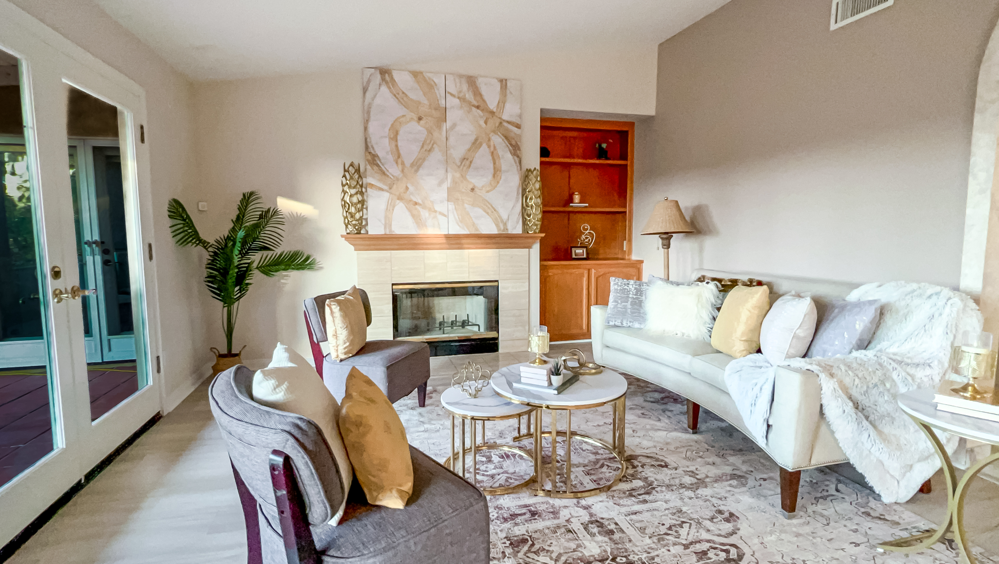
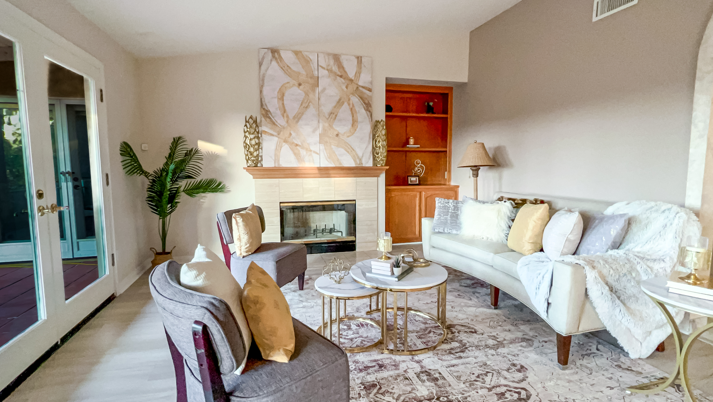

Monte Fuego Ranch
Rancho Santa Fe, CA
Monte Fuego Ranch was staged to enhance the home's scale, natural light, and architectural flow while maintaining a warm, approachable feel. A transitional style was chosen to blend soft textures with clean silhouettes, complementing the home's structure and layout.
Large-scale pieces were used to ground the open spaces without obstructing sightlines to exterior views. The neutral palette created a cohesive atmosphere, helping prospective buyers focus on the home's features and potential. Accessories were placed sparingly to reduce visual clutter and support a calm, livable presentation.
Select areas, such as the kitchen and bathrooms, were left minimally styled to highlight materials and invite buyer imagination.
Living Room Transformation

Kitchen Styling

Family Room Layout


Sitting Area Enhancement
 

Entryway Styling

Entryway styled with metallic accents and vertical lines to enhance scale and create an impressive first impression.
Bathroom Presentation

Bathroom left minimally styled to let premium tile and fixtures speak for themselves, allowing buyers to focus on the quality materials.
Hallway Flow

Hallway framed with subtle decor to guide flow without distraction, creating seamless movement between spaces.